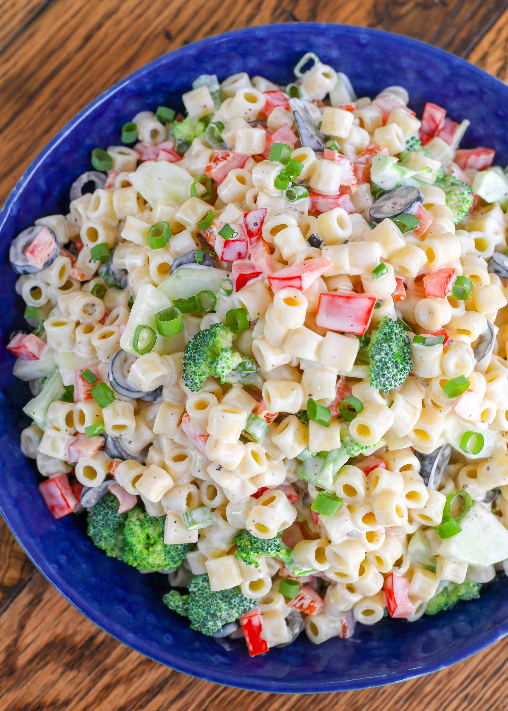

Pasta salad

Description
Classic pasta salad is made with simple ingredients this creamy, tangy, delightfully delicious macaroni salad
ingredients
- 6 oz uncooked elbows (wheat or gluten-free)
- 2 medium tomatoes (diced)
- 1/4 red onion (finely chopped)
- 1/4 cup Hellmann's light mayonnaise
- 1 tbsp white vinegar
Steps
- Boil macroni: Start by boiling the macroni noodls until they are tender to bite
- Drain the noodles
- Gather all the macroni salad add in and toss them in a large bowl with the drained macaroni
- Whisk together the creamy sauce and stir
- Keep the salad chilled until ready to serve